Карусель №8: фото на выбор
1. Обложка: Зеркальная галерея Версаля
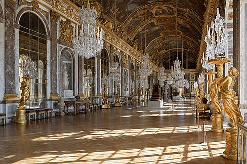
4. Слайд 2, вступление: расписной потолок
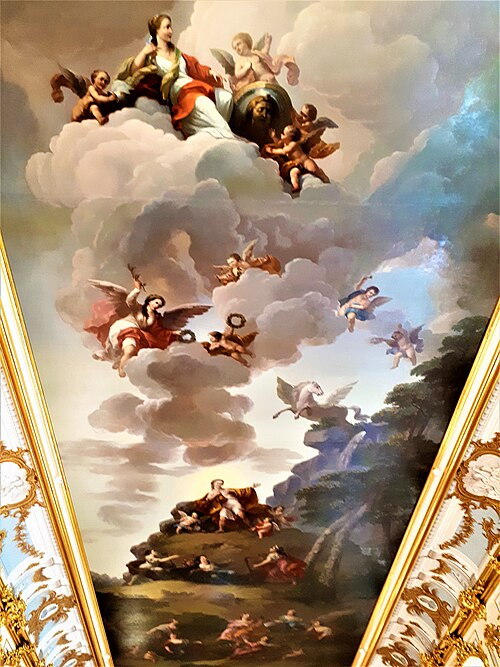
2. Слайд 3, барокко: Большой зал Екатерининского дворца, Царское Село
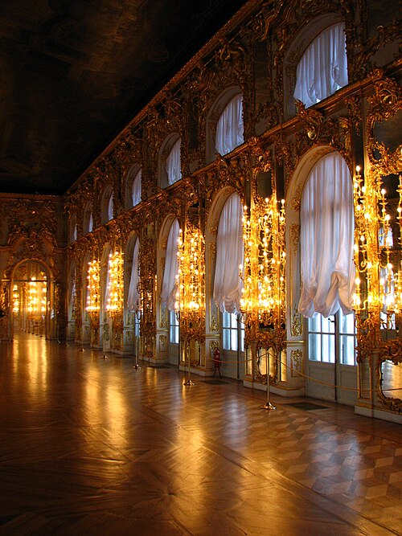
6. Слайд 4, рококо: Амалиенбург, Мюнхен
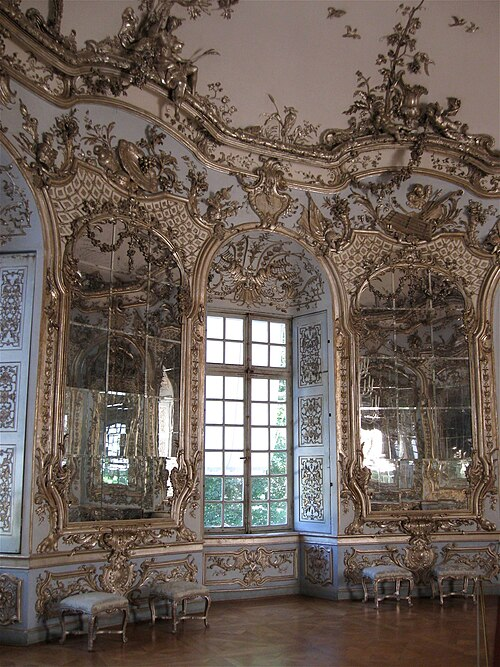
5. Слайд 6, «Проверь себя»: тот же Амалиенбург с другой стороны, ответ «рококо»
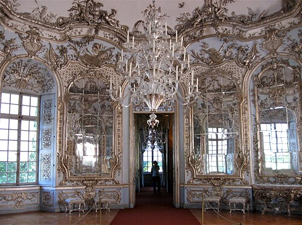
9. Слайд 5, классицизм: Итальянский зал, Павловск
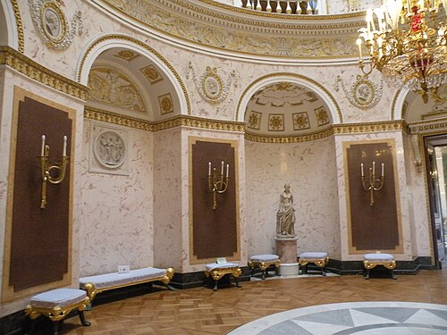
11. Слайд 7, ампир: музыкальный салон Мальмезона, дом Жозефины и Наполеона
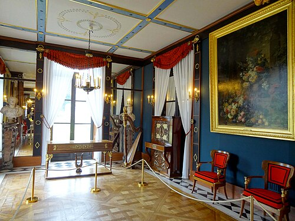
12. Слайд 8, модерн: лестница-волна, особняк Рябушинского
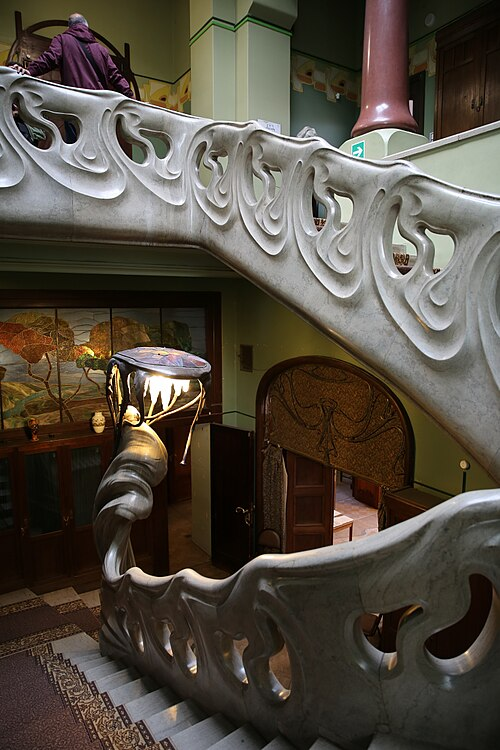
14. Слайд 9, шпаргалка: лестница дома Тасселя, Брюссель
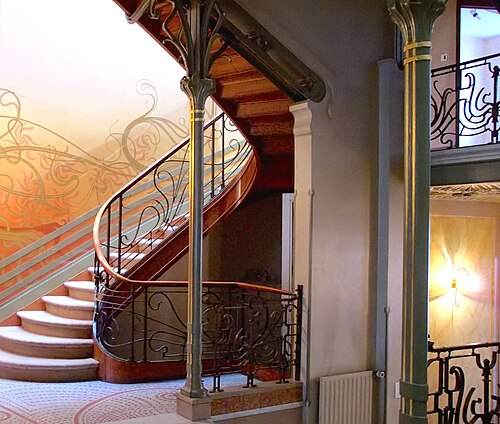
Запасные
3. барокко
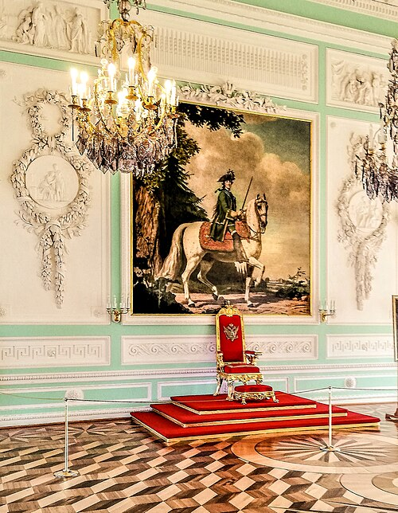
7. рококо
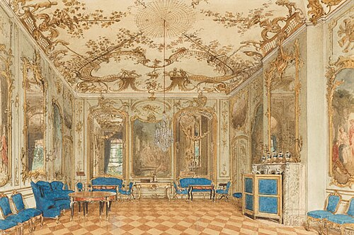
8. классицизм
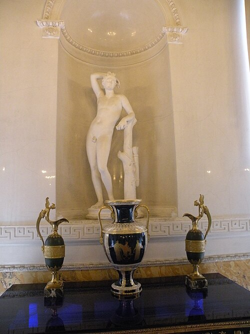
10. ампир
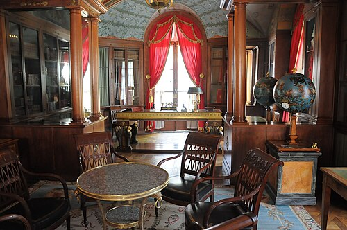
13. модерн
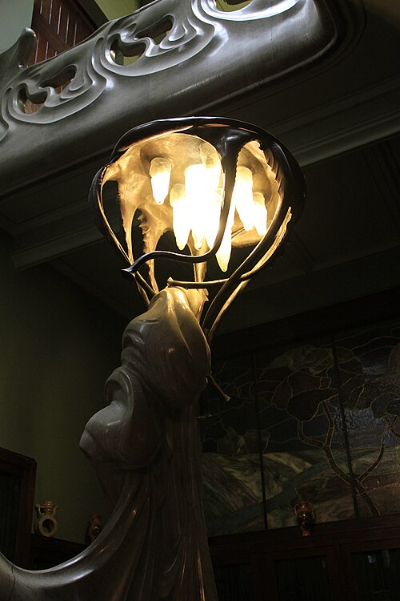